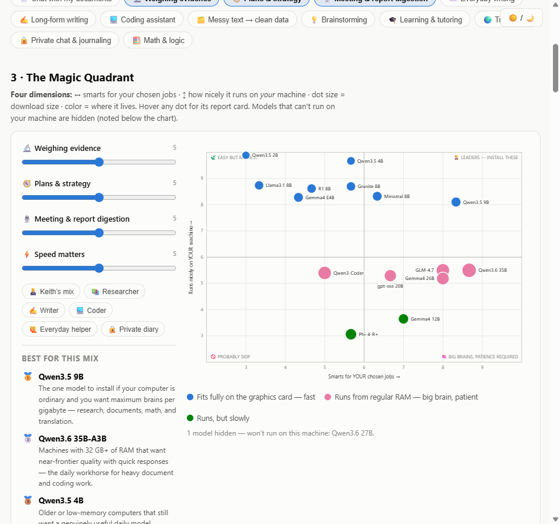

We wanted our own AI running on our own computer — private, free to use once installed, works with no internet. Cloud AIs (Claude, ChatGPT) stay in the toolbox for coding and the hardest thinking; the local AI handles volume, privacy, and drafts.
Local AI lives or dies on one number: graphics-card memory (VRAM). Ours is 8 GB (RTX 5060) — that's the desk the AI works at. Our 64 GB of regular RAM turned out to be a secret weapon: it's the overflow table that lets clever "MoE" models run far above our card's weight class.
The model world changes monthly, so we didn't trust memory: five AI research scouts searched the live web in parallel — one on the overall landscape for 8 GB cards, one on the Qwen family, one on every other family, one on reasoning models, one on the supporting tools (transcription, document search). A judge merged their 35 raw findings into one scored shortlist.
Three independent fact-checkers then tried to tear the shortlist apart — one checked every install command and download size, one checked nothing was outdated or missing, one challenged the scores against public benchmarks. They caught four wrong install commands, several scores that didn't survive the evidence, and two missing strong models. All fixed.
Everything learned went into one interactive page: a Magic Quadrant where you slide levers for what matters to you and the model dots glide into place, a sortable report card, a card per model with its exact install command, and a "straight talk" section with the honest limits.
It then grew into an anyone edition: pick YOUR machine (PC, Mac, or no graphics card) and YOUR jobs from a menu of 13, and every chart, speed estimate, and recommendation adapts. A second research crew scored all 16 models on all 13 jobs and verified the speed rules; fact-checkers corrected five errors before anything shipped. There's even a button that writes a ready-to-paste prompt for your own Claude/ChatGPT, for an up-to-the-minute second opinion.

Not one model — a small team, each with a job: Qwen3.5 9B as the fast daily driver (fits fully on the card), Qwen3.6 35B as the slow big brain (lives in RAM), Gemma 4 E4B as the polished writer, plus the document-search and transcription plumbing. About 55 GB all-in.
Install Ollama (the engine), pull the lineup, add Open WebUI (the friendly browser face), and set the two settings that everyone gets wrong: the context size (so long documents don't get silently chopped) and the document-search model (before uploading anything).
First real jobs: load a document set and ask hypothesis questions with citations; feed in a call transcript and get an SOP draft back. Then compare answers against Claude to learn where the local AI is enough — and where it isn't.
brain/ folder; the friendly version is this page.